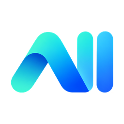
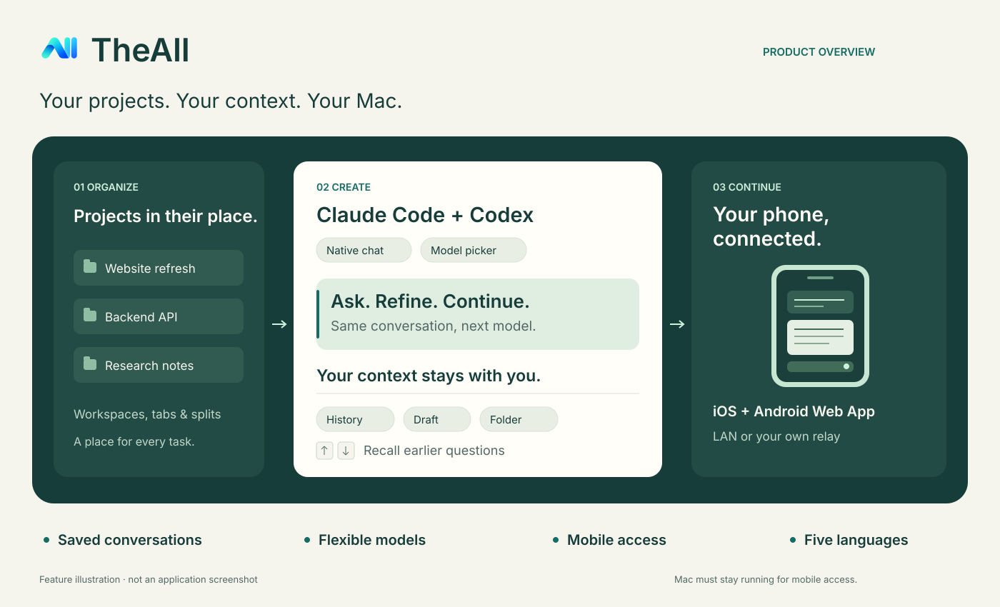

Room for every project
Organize tasks into workspaces, tabs, and splits. Workspaces take their name from your first question, with the working folder always in reach.

TheAllKeep your projects, AI conversations, and models together. TheAll gives your Mac a native chat interface, with the context to keep going and the freedom to continue from your phone.

Make the everyday parts of AI coding feel direct: organize a project, choose a model, find the history, and keep moving.
Organize tasks into workspaces, tabs, and splits. Workspaces take their name from your first question, with the working folder always in reach.
Switch models for your next message from a dropdown. Use official APIs or compatible custom Base URLs while keeping your chat and draft.
Reopen saved conversations, models, and folders. Recall previous questions with ↑ / ↓ in the composer, without losing your unsent draft.
Questions stand apart from answers. Completed thinking and progress collapse individually; expand what you need or jump to the latest reply.
API connections are saved through macOS Keychain. History is stored locally, and conversations go to the AI endpoint you choose.
Read history, reply, start conversations, and stop tasks from an iOS or Android browser. Your phone and Mac share the same sessions.
Add TheAll Mobile to your iPhone, iPad, or Android home screen. Give each phone access to all workspaces or just one, choose read-only or control access, and revoke it from your Mac.
The built-in HTTPS server needs no separate server or domain. Install the Mac's exported public CA certificate on the phone once, then scan a pairing QR code.
Deploy the included relay on your own server and domain. Your Mac connects over WSS and your phone over HTTPS, with no extra VPN app or router port forwarding.
Your Mac must remain running and awake. No hosted relay is included. A relay can read the traffic it forwards, so use infrastructure you trust. API keys are not sent to your phone.
Mobile setup guide ↗You need macOS 14+, an Apple Silicon Mac, an API connection, and a separately installed Claude Code or Codex CLI. See requirements.
Download v0.1.3, move TheAll.app to Applications, and open the app. DMG · ZIP
Choose a folder and Claude / OpenAI. Enter your API key and an optional Base URL. Saved connections can be reused in new conversations.
Choose a model and ask your question. ⌘ Return sends; Return adds a new line. Use ↑ / ↓ to recall earlier questions.
This arm64 release uses a local development certificate and is not notarized by Apple. macOS may block the first launch; after verifying the download and choosing to trust it, use Privacy & Security → Open Anyway if offered. Automatic updates are not configured. Apple's guidance · Verify downloads
Execution behavior: Agent tools execute automatically, including file changes and deletion, dependency installation, and Git pushes. Choose a project you intend the agent to operate. Questions that require your answer still wait for input.
Yes. TheAll provides a native macOS chat interface and runs your installed Claude Code or Codex CLI behind it. You configure your own API connection; service charges are determined by your provider.
The v0.1.3 desktop download targets Apple Silicon Macs running macOS 14 or later. The mobile companion is a Web App for iOS and Android browsers, not a native App Store or Play Store package.
Yes, after you deploy and configure a public relay. On the same local network you can connect directly to the Mac. Both modes require the Mac to stay online and running. Relay deployment guide.
The source is public for inspection. Use and distribution of source code and binary downloads are governed by LICENSE and any separately granted permissions; public availability does not grant a general license. Third-party licenses remain applicable. Read LICENSE.
Claude Code, Codex, and every conversation you want to continue.